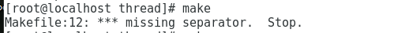
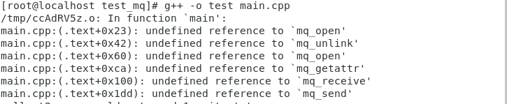

<!DOCTYPE HTML>
<html lang="zh-CN">
<head><meta name="generator" content="Hexo 3.8.0">
    <!--Setting-->
    <meta charset="UTF-8">
    <meta name="viewport" content="width=device-width, user-scalable=no, initial-scale=1.0, maximum-scale=1.0, minimum-scale=1.0">
    <meta http-equiv="X-UA-Compatible" content="IE=Edge,chrome=1">
    <meta http-equiv="Cache-Control" content="no-siteapp">
    <meta http-equiv="Cache-Control" content="no-transform">
    <meta name="renderer" content="webkit|ie-comp|ie-stand">
    <meta name="apple-mobile-web-app-capable" content="我的博客">
    <meta name="apple-mobile-web-app-status-bar-style" content="black">
    <meta name="format-detection" content="telephone=no,email=no,adress=no">
    <meta name="browsermode" content="application">
    <meta name="screen-orientation" content="portrait">
    <link rel="dns-prefetch" href="https://unistd68.yancoder.com">
    <!--SEO-->

    <meta name="keywords" content="错误汇总">


    <meta name="description" content="摘要：本文主要记录在编译、开发和其他场景下遇到的问题和解决方案！


编译错误类makefile的语法错误（一）（1）错误信息
*** missing separator. Stop.
（2）问...">


<meta name="robots" content="all">
<meta name="google" content="all">
<meta name="googlebot" content="all">
<meta name="verify" content="all">

    <!--Title-->


<title>【代码】CPP常见错误汇总 | 我的博客</title>


    <link rel="alternate" href="/atom.xml" title="我的博客" type="application/atom+xml">


    <link rel="icon" href="/favicon.ico">

    


<link rel="stylesheet" href="/css/bootstrap.min.css?rev=3.3.7">
<link rel="stylesheet" href="/css/font-awesome.min.css?rev=4.5.0">
<link rel="stylesheet" href="/css/style.css?rev=@@hash">


    
	<div class="hide">
		<script type="text/javascript">
			var cnzz_protocol = (("https:" == document.location.protocol) ? " https://" : " http://");document.write(unescape("%3Cspan class='cnzz_stat_icon_1263868967 hide' %3E%3Cscript%20src%3D%22https%3A%2F%2Fs95.cnzz.com%2Fz_stat.php%3Fweb_id%3D1272564536%22%3E%3C%2Fscript%3E%3C/span%3E%3Cscript src='" + cnzz_protocol + "s19.cnzz.com/z_stat.php%3Fid%3D1263868967%26show%3Dpic1' type='text/javascript'%3E%3C/script%3E"));
		</script>
	</div>


    

</head>

</html>
<!--[if lte IE 8]>
<style>
    html{ font-size: 1em }
</style>
<![endif]-->
<!--[if lte IE 9]>
<div style="ie">你使用的浏览器版本过低，为了你更好的阅读体验，请更新浏览器的版本或者使用其他现代浏览器，比如Chrome、Firefox、Safari等。</div>
<![endif]-->

<body>
    <header class="main-header" style="background-image:url(http://snippet.shenliyang.com/img/banner.jpg)">
    <div class="main-header-box">
        <a class="header-avatar" href="/" title="unistd68">
            
        </a>
        <div class="branding">
        	<!--<h2 class="text-hide">Snippet主题,从未如此简单有趣</h2>-->
            
                 
            
    	</div>
    </div>
</header>
    <nav class="main-navigation">
    <div class="container">
        <div class="row">
            <div class="col-sm-12">
                <div class="navbar-header"><span class="nav-toggle-button collapsed pull-right" data-toggle="collapse" data-target="#main-menu" id="mnav">
                    <span class="sr-only"></span>
                        <i class="fa fa-bars"></i>
                    </span>
                    <a class="navbar-brand" href="https://unistd68.yancoder.com">我的博客</a>
                </div>
                <div class="collapse navbar-collapse" id="main-menu">
                    <ul class="menu">
                        
                            <li role="presentation" class="text-center">
                                <a href="/"><i class="fa "></i>首页</a>
                            </li>
                        
                            <li role="presentation" class="text-center">
                                <a href="/categories/前端/"><i class="fa "></i>前端</a>
                            </li>
                        
                            <li role="presentation" class="text-center">
                                <a href="/categories/后端/"><i class="fa "></i>后端</a>
                            </li>
                        
                            <li role="presentation" class="text-center">
                                <a href="/categories/工具/"><i class="fa "></i>工具</a>
                            </li>
                        
                            <li role="presentation" class="text-center">
                                <a href="/archives/"><i class="fa "></i>时间轴</a>
                            </li>
                        
                    </ul>
                </div>
            </div>
        </div>
    </div>
</nav>
    <section class="content-wrap">
        <div class="container">
            <div class="row">
                <main class="col-md-8 main-content m-post">
                    <p id="process"></p>
<article class="post">
    <div class="post-head">
        <h1 id="【代码】CPP常见错误汇总">
            
	            【代码】CPP常见错误汇总
            
        </h1>
        <div class="post-meta">
    
        <span class="categories-meta fa-wrap">
            <i class="fa fa-folder-open-o"></i>
            <a class="category-link" href="/categories/代码/">代码</a>
        </span>
    

    
        <span class="fa-wrap">
            <i class="fa fa-tags"></i>
            <span class="tags-meta">
                
                    <a class="tag-link" href="/tags/错误汇总/">错误汇总</a>
                
            </span>
        </span>
    

    
        
        <span class="fa-wrap">
            <i class="fa fa-clock-o"></i>
            <span class="date-meta">2019/01/12</span>
        </span>
        
    
</div>
            
            
    </div>
    
    <div class="post-body post-content">
        <p><strong>摘要：</strong>本文主要记录在编译、开发和其他场景下遇到的问题和解决方案！</p>
<a id="more"></a>
<hr>
<h2 id="编译错误类"><a href="#编译错误类" class="headerlink" title="编译错误类"></a>编译错误类</h2><h3 id="makefile的语法错误（一）"><a href="#makefile的语法错误（一）" class="headerlink" title="makefile的语法错误（一）"></a>makefile的语法错误（一）</h3><p>（1）错误信息</p>
<p><code>*** missing separator. Stop.</code></p>
<p>（2）问题描述</p>
<p>在使用makefile时遇到的报错</p>
<p>（3）场景描述</p>
<ul>
<li>操作系统：CentOS 7 ，64位</li>
<li>编译环境：g++,gcc 4.8.5版本，root权限</li>
</ul>
<p>（4）截图</p>
<p><br></p>
<p>（5）问题分类</p>
<ul>
<li>makefile</li>
</ul>
<p>（6）问题分析和解决方案</p>
<p>makefile中语句的缩进必须用tab键</p>
<p>（7）总结</p>
<ul>
<li>对makefile不熟悉，多加训练</li>
<li>直接复制内容到makefile，有可能会引起相同的问题</li>
</ul>
<h3 id="g-编译错误类"><a href="#g-编译错误类" class="headerlink" title="g++编译错误类"></a>g++编译错误类</h3><p>（1）错误信息</p>
<p><code>undefined reference to &#39;mq_open&#39;</code></p>
<p>(2)问题描述</p>
<p>在编译posix消息队列程序时报错</p>
<p>（3）场景描述</p>
<ul>
<li>操作系统：CentOS 7 ，64位</li>
<li>编译环境：g++,gcc 4.8.5版本，root权限</li>
</ul>
<p>（4）截图</p>
<p></p>
<p>（5）问题分类</p>
<ul>
<li>posix</li>
<li>消息队列</li>
</ul>
<p>（6）问题分析和解决方案</p>
<ul>
<li>在编译时添加 -lrt 命令</li>
</ul>
<p>（7）总结</p>
<h3 id="文件格式错误"><a href="#文件格式错误" class="headerlink" title="文件格式错误"></a>文件格式错误</h3><p>（1）错误信息</p>
<p><code>/bin/bash^M: bad interpreter错误解决方法</code></p>
<p>（2）问题描述</p>
<p>在windows系统中创建sh文件，然后在centos7系统中运行shell脚本</p>
<p>（3）场景描述</p>
<ul>
<li>操作系统：CentOS 7 ，64位</li>
<li>编译环境：g++,gcc 4.8.5版本，root权限</li>
</ul>
<p>4）截图</p>
<p>略</p>
<p>5）问题分类</p>
<ul>
<li>bash</li>
<li>shell</li>
</ul>
<p>（6）问题分析和解决方案</p>
<ul>
<li>由于是在windows系统中创建的文件，文件的格式和Linux系统中的文件格式有区别，特别是sh这样的可执行文本</li>
<li>打开文件，使用命令<code>set ff?</code>检查，看看是不是dos字样，如果是，则将执行命令<code>set ff=unix</code>，然后执行命令<code>wq</code>进行保存更改，退出重进即可</li>
</ul>
<hr>
<h2 id="开发错误类"><a href="#开发错误类" class="headerlink" title="开发错误类"></a>开发错误类</h2>
    </div>
    
    <div class="post-footer">
        <div>
            
                转载声明：商业转载请联系作者获得授权,非商业转载请注明出处 © <a href="" target="_blank">Snippet</a>
            
        </div>
        <div>
            
        </div>
    </div>
</article>

<div class="article-nav prev-next-wrap clearfix">
    
        <a href="/posix共享内存/" class="pre-post btn btn-default" title="【原理】posix共享内存">
            <i class="fa fa-angle-left fa-fw"></i><span class="hidden-lg">上一篇</span>
            <span class="hidden-xs">【原理】posix共享内存</span>
        </a>
    
    
        <a href="/markdown语法/" class="next-post btn btn-default" title="【其他】markdown语法">
            <span class="hidden-lg">下一篇</span>
            <span class="hidden-xs">【其他】markdown语法</span><i class="fa fa-angle-right fa-fw"></i>
        </a>
    
</div>


    <div id="comments">
        
	
    <div id="vcomments" class="valine"></div>
    <script src="//cdn1.lncld.net/static/js/3.0.4/av-min.js"></script>
<script src="/assets/valine.min.js"></script>

    <script>
        new Valine({
            av: AV,
            el: '#vcomments',
            appId: 'xOKV9J4UeQAtVkvnJC7Kq2Jn-gzGzoHsz',
            appKey: 'erIpQac4azoCmgfBB7Dl9maa',
            placeholder: '说点什么吧',
            notify: false,
            verify: false,
            avatar: 'mm',
            meta: 'nick,mail'.split(','),
            pageSize: '10',
            path: window.location.pathname,
            lang: 'zh-CN'.toLowerCase()
        })
    </script>


    </div>


                </main>
                
                    <aside id="article-toc" role="navigation" class="col-md-4">
    <div class="widget">
        <h3 class="title">文章目录</h3>
        
            <ol class="toc"><li class="toc-item toc-level-2"><a class="toc-link" href="#编译错误类"><span class="toc-text">编译错误类</span></a><ol class="toc-child"><li class="toc-item toc-level-3"><a class="toc-link" href="#makefile的语法错误（一）"><span class="toc-text">makefile的语法错误（一）</span></a></li><li class="toc-item toc-level-3"><a class="toc-link" href="#g-编译错误类"><span class="toc-text">g++编译错误类</span></a></li><li class="toc-item toc-level-3"><a class="toc-link" href="#文件格式错误"><span class="toc-text">文件格式错误</span></a></li></ol></li><li class="toc-item toc-level-2"><a class="toc-link" href="#开发错误类"><span class="toc-text">开发错误类</span></a></li></ol>
        
    </div>
</aside>

                
            </div>
        </div>
    </section>
    <footer class="main-footer">
    <div class="container">
        <div class="row">
        </div>
    </div>
</footer>

<a id="back-to-top" class="icon-btn hide">
	<i class="fa fa-chevron-up"></i>
</a>


    <div class="copyright">
    <div class="container">
        <div class="row">
            <div class="col-sm-12">
                <div class="busuanzi">
    
</div>

            </div>
            <div class="col-sm-12">
                <span>Copyright &copy; 2017
                </span> |
                <span>
                    Powered by <a href="//hexo.io" class="copyright-links" target="_blank" rel="nofollow">Hexo</a>
                </span> |
                <span>
                    Theme by <a href="//github.com/shenliyang/hexo-theme-snippet.git" class="copyright-links" target="_blank" rel="nofollow">Snippet</a>
                </span>
            </div>
        </div>
    </div>
</div>


<script src="/js/app.js?rev=@@hash"></script>

</body>
</html>